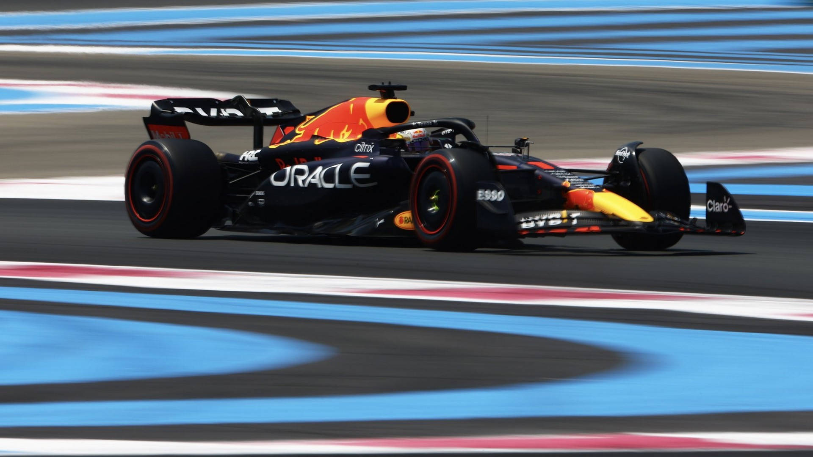
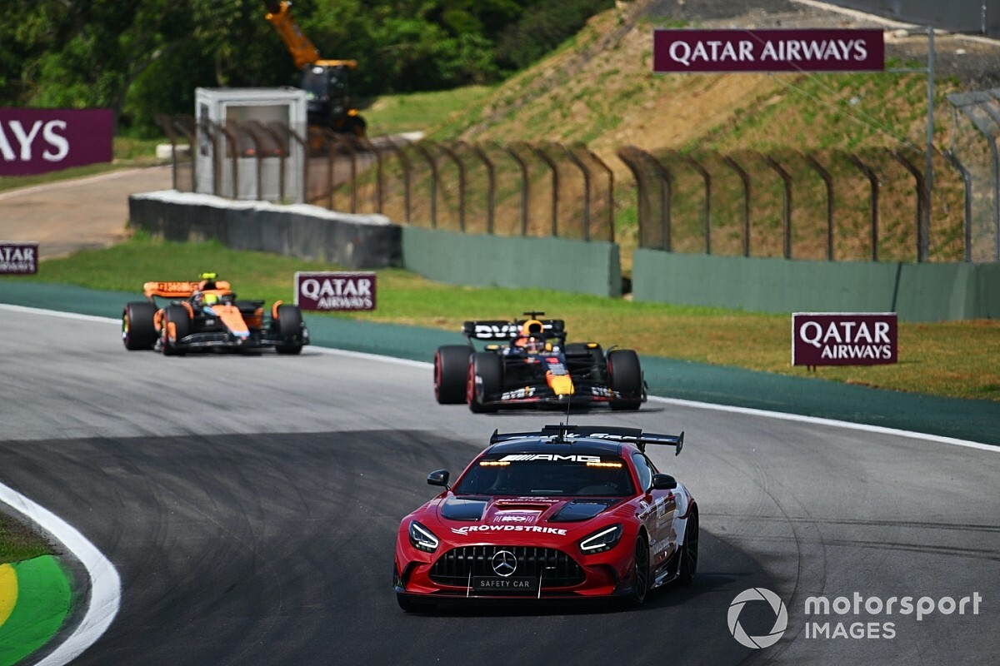
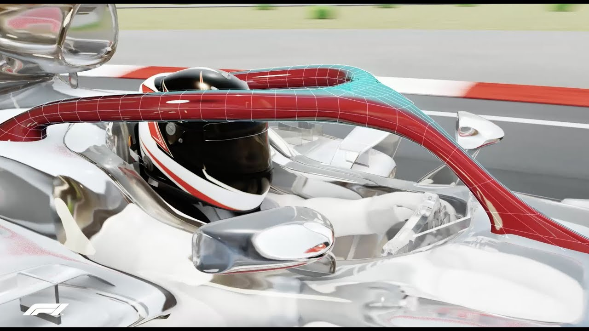

La Fórmula 1 (F1) es la categoría más prestigiosa del automovilismo mundial. Se trata de un campeonato de carreras de monoplazas altamente tecnológicos, organizado por la FIA (Federación Internacional del Automóvil). Cada temporada consta de una serie de carreras llamadas Grandes Premios (GP), que se celebran alrededor del mundo en circuitos permanentes, semipermanentes, semiurbanos y urbanos.
La F1 es conocida por su mezcla de velocidad,la increible ingeníeria de los monoplazas, estrategias complejas y los mejores pilotos del mundo. Las carreras pueden alcanzar velocidades superiores a 350 km/h, y los autos están diseñados con la tecnología más avanzada del deporte.

Reglas Básicas
Las carreras se disputan en circuitos cerrados con una longitud minima de 4 y máxima de 7 km.
Gana quien complete la distancia total en el menor tiempo posible (aproximadamente 305 km, salvo en Mónaco).
Cada equipo inscribe dos pilotos. Ambos suman puntos para el Campeonato de Constructores. En total son 10 equipos.
La clasificación se divide en tres sesiones (Q1, Q2, Q3) para determinar la parrilla de salida.
Se reparten puntos a los 10 primeros clasificados: 25 al 1º, 18 al 2º, 15 al 3º, y así sucesivamente hasta el top 10 que se le da 1 punto.
Se otorga 1 punto adicional al piloto que haga la vuelta rápida si termina en el Top 10.(Esto era hasta 2024 ya que en 2025 se quito este puntito).

¿Cómo son los Autos?
Los autos de F1 son monoplazas construidos con fibra de carbono, extremadamente ligeros y potentes. Utilizan motores híbridos V6 turbo de 1.6 litros junto con sistemas de recuperación de energía (ERS). La aerodinámica es clave, con alerones delanteros y traseros, y un fondo plano que maximiza el efecto suelo.
Elementos clave del auto:
DRS: Sistema que reduce la resistencia aerodinámica para facilitar adelantamientos. ERS: Recupera energía del calor y la convierte en potencia adicional. Halo: Estructura de seguridad que protege la cabeza del piloto. Neumáticos: Pirelli suministra compuestos blandos,(S) medios(M) y duros,(H) además de lluvia.(I),(W)

Temporada y Campeonatos
Cada temporada cuenta con alrededor de 23 carreras, en países de los cinco continentes. Al final del año, se coronan dos campeones: el mejor piloto y el mejor constructor (equipo).
Ejemplos de Grandes Premios: Arabia Saudita España Mónaco Abu Dhabi